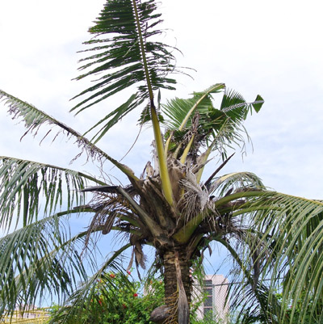
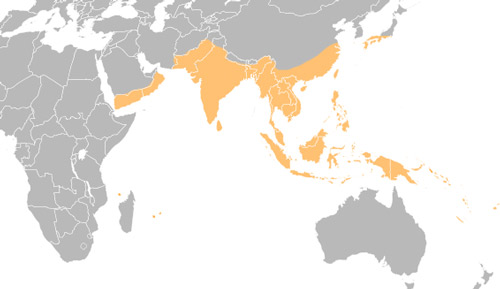
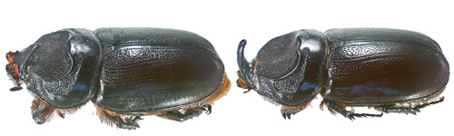
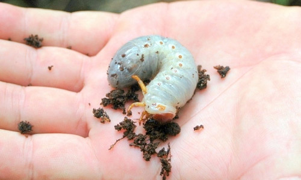
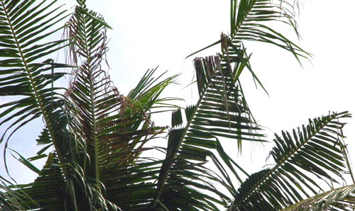

common name: Coconut rhinoceros beetle
scientific name: Oryctes rhinoceros (L.) (Insecta: Coleoptera: Scarabaeidae: Dynastinae)
Introduction - Distribution - Description - Biology - Host Plants - Economic Importance - Management and Control - Selected References
Introduction (Back to Top)
Oryctes rhinoceros (L.), the coconut rhinoceros beetle, is a pest species occurring throughout many tropical regions of the world. Adults can cause extensive damage to economically important wild and plantation palms.

Figure 1. Palm damaged by Oryctes rhinoceros. Photograph by Mark Benavente.
Oryctes rhinoceros is one of the most damaging insects to palms in Asia and the Pacific Islands. Adults eat the leaves and burrow into the crown, stunting plant development (Giblin-Davis 2001).
Distribution (Back to Top)
Oryctes rhinoceros is native to Asia, between India and Indonesia. It has since spread to Yemen, Reunion, and Hawaii. Throughout this distribution, the coconut rhinoceros beetle is most closely associated with its preferred host plant, Cocos nucifera L., the coconut palm (Hinckley 1973).

Figure 2. Distribution of Oryctes rhinoceros, based on published distribution records. Image by Mike Dornberg, Florida Department of Agriculture and Consumer Services, Division of Plant Industry.
Description (Back to Top)
Although Oryctes rhinoceros is found in several regions of the world, its shape, size and color are generally consistent (Manjeri et al. 2013). Adult beetles range from 1.2 to 2.5 inches in length (3.0 to 6.3 cm) and are dark brown or black. The ventral surface (underside) of males and females has reddish-brown hairs, but the female has a fuzzy grouping of these hairs at the tip of the abdomen. Both males and females possess a similarly sized horn used for leverage when moving within tightly-packed leaves or within the cavities they create in the crown of palms, the horn length is longer on average for males (Doane 1913).

Figure 3. Female (left) and male (right) Oryctes rhinoceros. In this picture, the head of the female is up while the head of the male is down, displaying an exaggerated difference in horn length. Photograph by Mike Dornberg, Florida Department of Agriculture and Consumer Services, Division of Plant Industry.
Oryctes rhinoceros larvae (grubs) are milky white with red heads. The body is C-shaped, has three pairs of segmented legs, and is grayish posteriorly. Over the course of three instars, or phases between molts, they grow to 4.0 inches long (10.0 cm).

Figure 4. Oryctes rhinoceros larva. Photograph by Aubrey Moore, University of Guam.
Biology (Back to Top)
Adult females deposit eggs inside dead palms, decaying plant material, soil with high organic matter content, and, occasionally, wooden structures (Manjeri et al. 2014). In approximately 11 days, eggs hatch into larvae which begin feeding on surrounding organic material. Eleven to 15 weeks later, the larvae will have grown up to 16 times larger and have stopped eating, after which they enter the pupal stage and are immobile for approximately six weeks (Hickley 1973). Upon emerging, adults fly to a new tree, feed, and mate, sometimes mating just after their first feeding. Adults spend most of their time feeding on fresh leaves. Adult females live up to nine months, over which period they can lay up to 100 eggs. Thus adult progeny may be present with the mother and the population consists of overlapping generations (Manjeri et al. 2014).
Multiple overlapping generations are common under favorable conditions, e.g. when no diapause is needed. Since coconuts occur in regions where there is no cold season and a minimal dry season, the beetles can be active and reproductive throughout the year.
Host Plants (Back to Top)
As with many beetles, adults and larvae have different feeding preferences. In the case of Oryctes rhinoceros, damage to plants is caused by adults (especially young adults) and not larvae, which feed on already rotting material (Giblin-Davis 2001).
Larvae live in decaying material including: Cocos nucifera, Artocarpus sp. (breadfruit), Calophyllum inophyllum (Alexandrian laurel), Mangifera sp. (mango), and Pandanus sp. (Gressitt 1953).
Adults are a major pest of Cocos nucifera (coconut palm) and Elaeis guineensis (African oil palm) (Giblin-Davis 2001) but are a minor pest of many other palms and plant species. By feeding on healthy leaves, Oryctes rhinoceros causes physical damage, which can stunt growth and lead to secondary infections from bacteria or fungi (Hinckley 1973).
Minor host plant species include:
| Acanthophoenix rubra (barbel palm) | Corypha umbraculifera (talipot palm) | Pandanus tectorius (Tahitian screwpine) |
| Agave sisalana (sisal agave) | Corypha utan (buri palm) | Phoenix dactylifera (date palm) |
| Agave americana (American agave) | Cyathea sp. (tree fern) | Phoenix sylvestris (wild date palm) |
| Aiphanes horrida (ruffle palm) | Dictyosperma album (red palm) | Pinanga sp. |
| Ananas comosus (pineapple) | Dypsis pinnatifrons | Pinanga insignis |
| Areca sp. (areca palm) | Heterospathe elata var. palauensis | Pritchardia pacifica (Fiji fan palm) |
| Areca catechu (betel-nut palm) | Hydriastele palauensis | Raphia farinifera (raffia palm) |
| Arenga sp. (arenga palm) | Hyophorbe lagenicaulis (bottle palm) | Raphia vinifera (bamboo palm) |
| Arenga pinnata (sugar palm) | Latania sp. | Roystonea regia (royal palm) |
| Borassus sp. (borassus palm) | Livistona chinensis (Chinese fan palm) | Saccharum sp. (sugarcane) |
| Borassus flabellifer (palmyra palm) | Metroxylon amicarum (Caroline ivory-nut palm) | Syagrus romanzoffiana (queen palm) |
| Caryota urens (fish-tail palm) | Metroxylon sagu (sago palm) | Thrinax sp. (thatch palm) |
| Casuarina equisetifolia (Australian pine) | Musa sp. (banana) | Verschaffeltia splendida (Seychelles stilt palm) |
| Clinostigma samoense | Normanbya sp. | Wodyetia bifurcata (foxtail palm) |
| Colocasia sp. (taro) | Nypa fruticans (nipa palm) | |
| Corypha sp. (gebang palm) | Oncosperma sp. |
(Gressitt 1953; Lever 1969; Elfers 1988; Giblin-Davis 2001; Quitugua 2010)
Economic Importance (Back to Top)
Malaysia: Adult Oryctes rhinoceros cut through leaves and bore holes into palm crowns. Damage is exacerbated by the tendency of beetles to aggregate. Production loss in plantations in Malaysia has averaged 40%, but has reached 92% (Manjeri et al. 2013).
Paulau: Oryctes rhinoceros was found in Palau in 1942 and caused an overall tree mortality of 50% (Gressitt 1953).
Guam and Hawaii: In 2007 Oryctes rhinoceros was declared established in Guam. As of 2012, the coconut palm was Guam's second most abundant tree (Moore 2012). Moore (2007) had previously concluded that "accidental transport of other scarab beetles from Guam to Hawaii is well documented." In 2013, the coconut rhinoceros beetle was found in Hawaii (Hara 2014).
North America: Coconut rhinoceros beetle is not established in the mainland United States; however, the risk of accidental transport remains in our increasingly connected world. If you suspect that you have found this beetle, immediately contact your local state agency. In Florida, contact the Florida Department of Agriculture and Consumer Services 1-800-HELP-FLA (1-800-436-7352).
Management and Control (Back to Top)
Detection can be difficult due to the beetle’s nocturnal activity and residence within trees. Visual signs such as holes bored at the base of leaves and V-shaped feeding damage help locate this beetle. Recently, acoustic detection was used to find Oryctes rhinoceros in live and dead palms on Guam (Mankin and Moore 2010). Once detected, management and control are required to mitigate the economic impact of a beetle infestation.

Figure 5. Typical V-shaped damage to coconut leaves by Oryctes rhinoceros. Photograph by Ben Quichocho, USDA-APHIS.
Control: Historical control of scarab beetle pests has included chemical and biopesticides, biological control (predators, parasitoids, and pathogens), and trapping with lures (Jackson and Klein 2006). Traps for the coconut rhinoceros beetle contain 4-methyloctanoate, an aggregation pheromone produced by the male beetle. In breeding sites, the fungus Metarhizium anisopliae may be applied for larval control and is distributed by adults. This fungus acts as a biopesticide on immature stages of the beetle (Bedford (2014).
Viruses in the genus Nudivirus have also been associated with Oryctes rhinoceros and may play a role in controlling the beetle in regions where they are invasive (Bedford 2014). Infection by Oryctes rhinoceros nudivirusdeforms and may kill larvae, and hinders oviposition by females (Bedford 2014). However, the nudivirus may harm other species and genera of scarabs. In Korea, farmers of Allomyrina dichotoma (Japanese rhinoceros beetle) face a potential disaster if the nudivirus were to infect their populations, which consist of hundreds of larvae grown together in large plastic containers. These beetles are cultivated for sale as pets and to be used in gambling. The result of a Korean study in which Allomyrina dichotoma larvae were infected with the nudivirus was that 60% died in six weeks. There is also concern that the nudivirus may be transmitted to wild populations of Allomyrina dichotoma. There is no clear indication that the Oryctes rhinoceros nudivirus is the major pathogen responsible for losses of Allomyrina dichotoma in Korea and tests are ongoing (Lee et al. 2015).
Management: Managing the coconut rhinoceros beetle involves removing or destroying organic material that supports larval development such as decaying logs and stumps, removing dead palms, and removing piles of leaves and grass (Schmaedick 2005). A study on burning the downed and decomposing trunks of oil palms has shown that only partial burning of sites is ineffective in managing population levels of Oryctes rhinoceros (Abidin et al. 2014).
Selected References (Back to Top)
- Abidin CMRZ, Ahmad AH, Salim H, Hamid NH. 2014. Population dynamics of Oryctes rhinoceros in decomposing oil palm trunks in areas practicing zero burning and partial burning. Journal of Oil Palm Research 26: 140-145.
- Bedford GO. 2014. Advances in the control of rhinoceros beetle, Oryctes rhinoceros in oil palm. Journal of Oil Palm Research 26: 183-194.
- Doane RW. 1913. How Oryctes rhinoceros, a dynastid beetle, uses its horn. Science, New Series 38: 883.
- Elfers SC. 1998. Abstract for Casuarina equisetifolia, Australian pine. The Nature Conservancy: 9-10.
- Giblin-Davis R. 2001. Borers of palms. Insects on palms. CABI Publishing, Wallingford Great Britain: 297-300.
- Gressitt JL. 1953. The coconut rhinoceros beetle (Oryctes rhinoceros) with particular reference to the Palau Islands. Bulletin of the Bernice P. Bishop Museum 212: 157.
- Hara AH. 2014. Coconut rhinoceros beetle, Oryctes rhinoceros: a major threat to Hawaii’s coconut and palm trees. University of Hawaii at Manoa; Crop Production Services Seminar & Tradeshow.
- Hinckley AD. 1973. Ecology of the coconut rhinoceros beetle, Oryctes rhinoceros (L.) (Coleoptera: Dynastidae). Biotropica 5: 111-116.
- Jackson TA, Klein MG. 2006. Scarabs as pests: a continuing problem. Coleopterists Society Monographs 5: 102-119.
- Lee S, Park KH, Nam, SH, Kwak KW, Choi JY. 2015. First report of Oryctes rhinoceros nudivirus (Coleoptera: Scarabaeidae) causing severe disease in Allomyrina dichotoma in Korea. Journal of Insect Science 15: 26.
- Lever RJAW. 1969. Pests of the coconut palm. Food and Agriculture Organization of the United Nations: 125-133.
- Manjeri et al. 2013. Morphometric analysis of Oryctes rhinoceros (L.) (Coleoptera: Scarabaeidae) from oil palm plantations. The Coleopterists Bulletin 67: 194-200.
- Manjeri et al. 2014. Oryctes rhinoceros Beetles, an oil palm pest in Malaysia. Annual Research and Review in Biology 4: 3430-3439.
- Mankin RW, Moore A. 2010. Acoustic detection of Oryctes rhinoceros (Coleoptera: Scarabaeidae: Dynastinae) and Nasutitermes luzonicus (Isoptera: Termitidae) in palm trees in urban Guam. Journal of Economic Entomology 103: 1135-1143.
- Moore A. 2007. Assessment of the rhinoceros beetle infestation on Guam. University of Guam, Western Pacific Tropical Research Center.
- Moore A. 2012. Guam as a source of new insects for Hawaii. Pacific Entomology Conference. University of Hawaii, Cooperative Extension Services Western Pacific Research Center.
- Quitugua R. 2010. Rhino beetles take aim at new palm species, an interview with Eradication Project Logistics Manager for the Department of Agriculture, Roland Quitugua. Kuam News Network, Guam.
- Schmaedick M. 2005. Coconut Rhinoceros Beetle. American Samoa Community College Community & Natural Resources Cooperative Research. Pests and Diseases of American Samoa number 8.